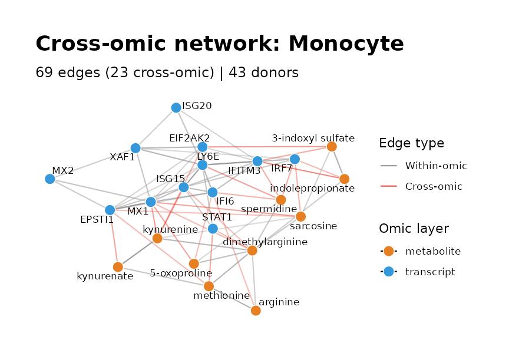
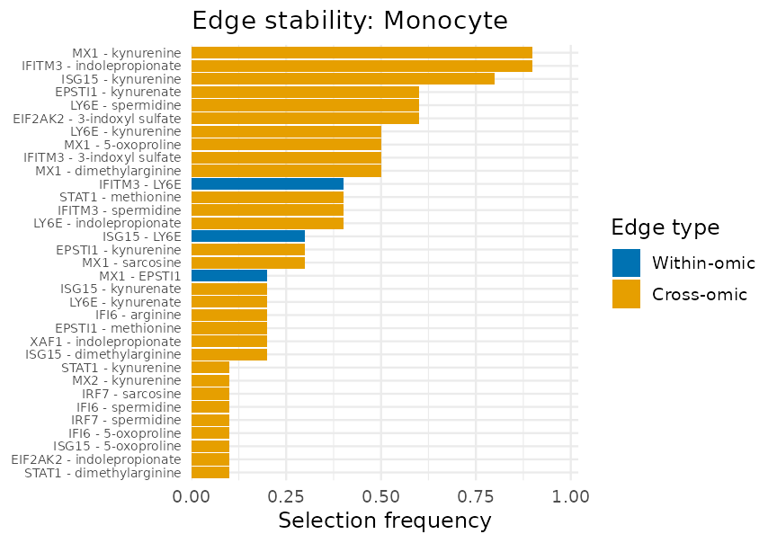
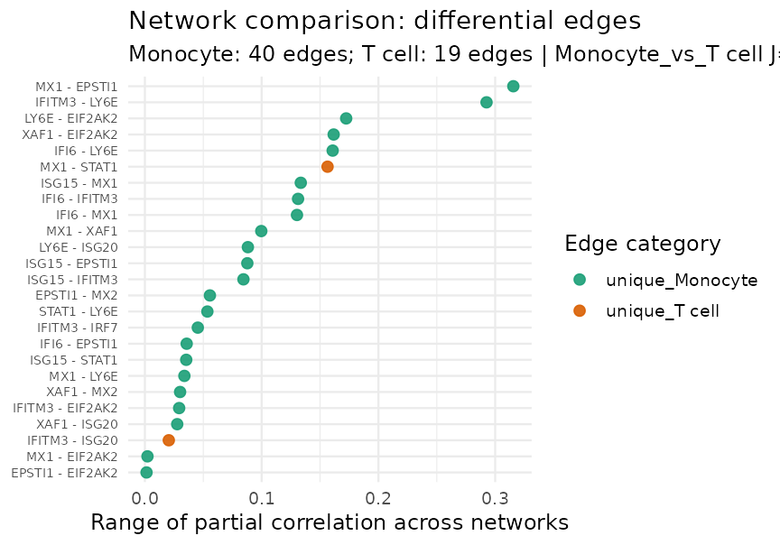

Exploratory cross-omic networks within a cell type
Cuiwei Gao
26 November 2026
Source:vignettes/network-tutorial.Rmd
network-tutorial.RmdAbstract
The network functions of exposomeSC estimate a sparse graph over the transcripts of one cell type and a second omic layer measured once per donor. This vignette runs them on real data: monocytes and T cells of 43 patients and metabolites measured in their plasma. It shows what the functions take and return, how far the result depends on the penalties, and what an edge can and cannot be taken to mean.
Introduction
The network functions of exposomeSC estimate, for one cell type, a sparse graph over transcripts of that cell type and the features of a second omic layer that is measured once per donor, such as metabolites in plasma. An edge joins two features that remain associated across the donors given the other features of the graph: a non-zero entry of a penalised estimate of the precision matrix.
The functions are exploratory. An edge is a regularised conditional association under a Gaussian graphical model of transformed data. It is not a biochemical interaction and not a causal relation, and which edges are found depends on the transform, the penalties and the number of donors.
These functions answer a different question from
run_sc_exwas(), which tests one exposure against one gene
at a time, and they do not use its results. They share the container and
the pseudobulk step with it.
The vignette runs on the INCOV data of the package: blood cells of 43
patients with COVID-19 (Su et al.
2020) and metabolites measured in their plasma at the same
blood draw (?incov_pbmc_subset). With 43 donors and at most
14 cells per donor and cell type, the networks below show how the
functions are called and what they return. They are not findings.
The estimators come from glasso and coglasso, and the plots need ggplot2, igraph, ggraph and tidygraph. exposomeSC only suggests these packages; a chunk that needs one of them is run when it is installed.
Installation
if (!requireNamespace("BiocManager", quietly = TRUE)) {
install.packages("BiocManager")
}
BiocManager::install("exposomeSC")The data
library(exposomeSC)
library(SingleCellExperiment)
x <- readRDS(system.file("extdata", "incov_pbmc_subset.rds",
package = "exposomeSC"))
table(x$cell_type)
#>
#> Monocyte T cell
#> 602 430
plasma <- metadata(x)$plasma_metabolites
dim(plasma)
#> [1] 43 182
table(metadata(x)$metabolite_info$super_pathway)
#>
#> Amino Acid Carbohydrate
#> 35 6
#> Cofactors and Vitamins Energy
#> 9 1
#> Lipid Nucleotide
#> 109 12
#> Partially Characterized Molecules Peptide
#> 6 4The second layer is a matrix with one row per donor. Its rows are matched to the donors of the cells by name, never by position:
identical(rownames(plasma), rownames(exposureData(x)))
#> [1] TRUEThe examples use a small panel: 12 interferon-stimulated genes, because the donors had a viral infection, and ten metabolites of amino-acid pathways, on the log2 scale.
interferon <- c("IFI6", "ISG15", "MX1", "IFITM3", "STAT1", "XAF1", "EPSTI1",
"LY6E", "IRF7", "ISG20", "MX2", "EIF2AK2")
panel <- c("kynurenine", "kynurenate", "arginine", "methionine", "sarcosine",
"spermidine", "5-oxoproline", "3-indoxyl sulfate", "indolepropionate",
"dimethylarginine (SDMA + ADMA)")
metabolites <- log2(plasma[, panel])
colnames(metabolites)[10] <- "dimethylarginine"The calls of this vignette differ in the cell type and the estimator only, so they go through one helper:
network <- function(celltype, ...) {
run_celltype_network(x, metabolites = metabolites, celltype = celltype,
covariates = c("age", "sex_male"), genes = interferon,
transform = "log_cpm", ...)
}The transform of the counts
The functions sum the raw counts of the cell type within each donor
and transform the sums. The default, transform = "vst", is
the variance-stabilising transformation of DESeq2,
which needs 1,000 genes with a mean normalised count above 5. Fourteen
cells per donor do not give that many; the number of genes with a mean
raw count above 5 is:
monocytes <- assay(donor_pseudobulk(x)[["Monocyte"]], "counts")
sum(rowMeans(monocytes) > 5)
#> [1] 878A call with the default therefore stops. It does not switch to another transform, because the same call would then give different networks on different data or machines:
run_celltype_network(x, metabolites = metabolites, celltype = "Monocyte",
genes = interferon, method = "block_glasso")
#> Error:
#> ! DESeq2::vst() failed for 'Monocyte': fewer than 1000 genes have a mean normalised count above 5. Use transform = "log_cpm" for counts that vst() cannot transform.The helper above asks for transform = "log_cpm", the
base-2 logarithm of the counts per million plus one. Either transform is
computed from all genes of the object; genes then names the
genes that become nodes.
A network for one cell type
method = "block_glasso" is the graphical lasso (Friedman et al.
2008) on the correlation matrix of the features, with one
penalty for pairs of features of the same layer (lambda_w,
default 0.3) and one for pairs of different layers
(lambda_b, default 0.5). covariates are
regressed out of both layers first.
mono <- network("Monocyte", method = "block_glasso")
#> [exposomeSC] Building block_glasso network for 'Monocyte': n=43 donors, p=22 features (12 transcripts + 10 metabolites)
mono
#> CelltypeNetworkResult for 'Monocyte'
#> Method: block_glasso
#> Nodes: 22 (12 transcripts, 10 metabolites)
#> Edges: 40 (0 cross-omic)
#> Donors: 43The result is a CelltypeNetworkResult. Its parts are
read with accessors:
networkCelltype(mono)
#> [1] "Monocyte"
networkMethod(mono)
#> [1] "block_glasso"
head(networkNodes(mono), 3)
#> DataFrame with 3 rows and 3 columns
#> feature omic_layer block
#> <character> <character> <integer>
#> 1 IFI6 transcript 1
#> 2 ISG15 transcript 1
#> 3 MX1 transcript 1
dim(networkPrecision(mono))
#> [1] 22 22
sum(networkAdjacency(mono)) / 2
#> [1] 40
metadata(mono)[c("n_donors", "transform", "covariates")]
#> $n_donors
#> [1] 43
#>
#> $transform
#> [1] "log_cpm"
#>
#> $covariates
#> [1] "age" "sex_male"The penalties decide how many edges there are, within the layers and between them:
looser <- network("Monocyte", method = "block_glasso", lambda_w = 0.2,
lambda_b = 0.2)
#> [exposomeSC] Building block_glasso network for 'Monocyte': n=43 donors, p=22 features (12 transcripts + 10 metabolites)
rbind(default = unlist(metadata(mono)$edge_counts),
looser = unlist(metadata(looser)$edge_counts))
#> total within_transcript within_metabolite cross_omic
#> default 40 30 10 0
#> looser 69 32 14 23
set.seed(1)
plot_celltype_network(looser, layout = "fr", label_top = 22L)
The network of monocytes at the looser penalties. Edges between a transcript and a metabolite are highlighted.
Penalties chosen by stability
method = "coglasso" is the collaborative graphical lasso
(Albanese et al.
2026), which also has one penalty for pairs within a layer
and one for pairs between the layers, and a weight for the agreement of
the layers. All three are chosen from a grid by the stability of the
edges under subsampling of the donors. The grid and the number of
subsamples are small here to keep the vignette short; the defaults are a
15 by 15 grid and 20 subsamples.
set.seed(1)
stable <- network("Monocyte", method = "coglasso", nlambda_w = 5L,
nlambda_b = 5L, rep_num = 10L)
#> [exposomeSC] Building coglasso network for 'Monocyte': n=43 donors, p=22 features (12 transcripts + 10 metabolites)
stable
#> CelltypeNetworkResult for 'Monocyte'
#> Method: coglasso
#> Nodes: 22 (12 transcripts, 10 metabolites)
#> Edges: 7 (7 cross-omic)
#> Stability selection: yes
#> Donors: 43
unlist(metadata(stable)$selection)
#> subsample_ratio rep_num selected_lambda_w selected_lambda_b
#> 0.80000000 10.00000000 0.70818928 0.35576195
#> selected_c stars_variability
#> 0.01000000 0.09662338coglasso takes the largest penalty of each grid from the data: the largest correlation within a layer and the largest between the layers. When this vignette was written, the within-layer penalty chosen was that largest value, at which no two features of one layer are joined. The network then has edges between the layers only because the choice ended at the edge of the grid, not because the transcripts are unrelated to each other; the block graphical lasso above joins many of them.
networkStability() returns, for every pair of features,
the fraction of the subsamples in which the pair was joined at the
chosen penalties.
scores <- networkStability(stable)
dim(scores)
#> [1] 22 22
table(cut(scores[upper.tri(scores)], c(0, 0.25, 0.5, 0.75, 1),
include.lowest = TRUE))
#>
#> [0,0.25] (0.25,0.5] (0.5,0.75] (0.75,1]
#> 214 11 3 3
plot_edge_stability(stable)
Pairs of features by the fraction of subsamples in which they were joined at the chosen penalties. Not every pair shown is an edge of the network.
The two estimators need not agree, and with 43 donors the result of either depends on its settings. When this vignette was written, a 4 by 4 grid and a 6 by 6 grid each gave a coglasso network other than the one above, and the defaults of the function, a 15 by 15 grid and 20 subsamples, gave the same one.
Two cell types
run_comparative_network() sets networks of several cell
types side by side. It needs the same features in each. Naming the genes
with genes provides them, as long as each gene has counts
in each cell type: a gene that is constant across the donors of a cell
type is left out of that network, with a message.
top_var_genes, the other way to limit the transcripts,
takes the most variable genes of each cell type, and these differ
between cell types.
tcell <- network("T cell", method = "block_glasso")
#> [exposomeSC] Building block_glasso network for 'T cell': n=43 donors, p=22 features (12 transcripts + 10 metabolites)
comparison <- run_comparative_network(mono, tcell)
comparison
#> NetworkComparison
#> Cell types compared: Monocyte, T cell
#> Shared edges: 17
#> Differential edges: 25
#> Unique to Monocyte: 23
#> Unique to T cell: 2
unlist(comparisonSummary(comparison)[c("n_total_edges", "n_shared",
"n_differential")])
#> n_total_edges n_shared n_differential
#> 42 17 25
head(sharedEdges(comparison), 3)
#> DataFrame with 3 rows and 7 columns
#> node_i node_j layer_i layer_j cross_omic category
#> <character> <character> <character> <character> <logical> <character>
#> 1 IFI6 ISG15 transcript transcript FALSE shared
#> 2 ISG15 LY6E transcript transcript FALSE shared
#> 3 ISG15 IRF7 transcript transcript FALSE shared
#> max_diff
#> <numeric>
#> 1 0.295689
#> 2 0.198959
#> 3 0.113302
head(diffEdges(comparison), 3)
#> DataFrame with 3 rows and 7 columns
#> node_i node_j layer_i layer_j cross_omic category
#> <character> <character> <character> <character> <logical> <character>
#> 1 IFI6 MX1 transcript transcript FALSE unique_Monocyte
#> 2 IFI6 IFITM3 transcript transcript FALSE unique_Monocyte
#> 3 IFI6 EPSTI1 transcript transcript FALSE unique_Monocyte
#> max_diff
#> <numeric>
#> 1 0.1302590
#> 2 0.1311805
#> 3 0.0357963
vapply(celltypeSpecificEdges(comparison), nrow, integer(1))
#> Monocyte T cell
#> 23 2max_diff is the difference between the partial
correlations of an edge in the two networks.
plot_network_comparison(comparison)
Edges that are in one of the two networks only, by the difference of their partial correlations.
The comparison is descriptive. It tests no edge and reports no p-value, and an edge that is in one network and not in the other can be within the noise of either estimate.
Features associated with an exposure
run_exposure_network() works in two stages. It first
selects, among the genes of the cell type and the features of the second
layer, those associated with an exposure, and then estimates a network
among the selected features only. The exposure here is age. Sex is given
as a covariate: the features are screened by their rank correlation with
age given sex, and sex is regressed out of them before the network is
estimated. The candidates are all genes of the object and all 182 plasma
metabolites.
age_net <- run_exposure_network(x, log2(plasma), celltype = "Monocyte",
exposure = "age", covariates = "sex_male",
selection_method = "univariate", network_method = "block_glasso",
transform = "log_cpm")
#> [exposomeSC] Exposure network: 7/15588 features selected
age_net
#> CelltypeNetworkResult for 'Monocyte'
#> Method: exposure_restricted
#> Nodes: 7 (1 transcripts, 6 metabolites)
#> Edges: 15 (0 cross-omic)
#> Donors: 43
metadata(age_net)[c("n_total_features", "selection_method", "fdr_threshold")]
#> $n_total_features
#> [1] 15588
#>
#> $selection_method
#> [1] "univariate"
#>
#> $fdr_threshold
#> [1] 0.05
selected <- networkNodes(age_net)
table(selected$omic_layer)
#>
#> metabolite transcript
#> 6 1
selected$feature
#> [1] "DFFA"
#> [2] "androstenediol (3alpha, 17alpha) monosulfate (2)"
#> [3] "androstenediol (3beta,17beta) disulfate (2)"
#> [4] "androsterone glucuronide"
#> [5] "dehydroepiandrosterone sulfate (DHEA-S)"
#> [6] "pregnenediol sulfate (C21H34O5S)*"
#> [7] "pregnenolone sulfate"selection_method = "univariate" keeps the features whose
Spearman correlation with the exposure, given the covariates, passes a
false discovery rate of 0.05 among the candidates that vary across the
donors with a value of the exposure; "stability" selects by
stability selection (Meinshausen and Bühlmann 2010)
instead. The call stops when fewer than three features are selected.
genes names the candidate genes, as it names the nodes of
run_celltype_network(); fewer candidates leave fewer tests
to adjust for.
The quantity that was tested is the partial rank correlation of a feature with age given sex: the correlation of the two after the ranks of sex are regressed out of the ranks of each. Regressing sex out of the values themselves and ranking what is left would not do for a gene with few counts, whose many equal values would then be ranked by sex. For the selected metabolites the correlation is:
chosen <- selected$feature[selected$omic_layer == "metabolite"]
donor_data <- as.data.frame(exposureData(x))
given_sex <- function(v) residuals(lm(rank(v) ~ rank(sex_male), donor_data))
ranks <- apply(plasma[, chosen, drop = FALSE], 2, given_sex)
round(cor(given_sex(donor_data$age), ranks)[1, ], 2)
#> androstenediol (3alpha, 17alpha) monosulfate (2)
#> -0.63
#> androstenediol (3beta,17beta) disulfate (2)
#> -0.68
#> androsterone glucuronide
#> -0.62
#> dehydroepiandrosterone sulfate (DHEA-S)
#> -0.74
#> pregnenediol sulfate (C21H34O5S)*
#> -0.61
#> pregnenolone sulfate
#> -0.69Features that change with age in the same direction are correlated with each other across donors of different ages, whatever else links them. The exposure is not regressed out of the features and is not a node of the network, so an edge between two features can reflect nothing more than the association that both have with the exposure. The network does not estimate how the dependence between features changes with the exposure.
What a network does not show
Selecting features and estimating a network on the same donors overstates the stability of the result; a network that is to be relied on needs donors that took no part in the selection. Building a network within a cell type removes the differences between broad cell types from the transcript values, but not those between subtypes, and not the effects of sampling, capture and annotation. And the graph is one of many that 43 donors are compatible with.
Session information
sessionInfo()
#> R Under development (unstable) (2026-11-25 r90991)
#> Platform: x86_64-pc-linux-gnu
#> Running under: Ubuntu 26.04.1 LTS
#>
#> Matrix products: default
#> BLAS: /usr/lib/x86_64-linux-gnu/openblas-pthread/libblas.so.3
#> LAPACK: /usr/lib/x86_64-linux-gnu/openblas-pthread/libopenblasp-r0.3.32.so; LAPACK version 3.12.0
#>
#> locale:
#> [1] LC_CTYPE=C.UTF-8 LC_NUMERIC=C LC_TIME=C.UTF-8
#> [4] LC_COLLATE=C.UTF-8 LC_MONETARY=C.UTF-8 LC_MESSAGES=C.UTF-8
#> [7] LC_PAPER=C.UTF-8 LC_NAME=C LC_ADDRESS=C
#> [10] LC_TELEPHONE=C LC_MEASUREMENT=C.UTF-8 LC_IDENTIFICATION=C
#>
#> time zone: UTC
#> tzcode source: system (glibc)
#>
#> attached base packages:
#> [1] stats4 stats graphics grDevices utils datasets methods
#> [8] base
#>
#> other attached packages:
#> [1] SingleCellExperiment_1.36.0 SummarizedExperiment_1.44.0
#> [3] Biobase_2.74.0 GenomicRanges_1.66.0
#> [5] Seqinfo_1.4.0 IRanges_2.48.0
#> [7] S4Vectors_0.52.0 BiocGenerics_0.60.0
#> [9] generics_0.1.4 MatrixGenerics_1.26.0
#> [11] matrixStats_1.5.0 exposomeSC_0.99.4
#> [13] BiocStyle_2.42.0
#>
#> loaded via a namespace (and not attached):
#> [1] tidyselect_1.2.1 viridisLite_0.4.3 dplyr_1.2.1
#> [4] farver_2.1.2 viridis_0.6.5 S7_1.0.0
#> [7] ggraph_2.2.2 fastmap_1.2.0 tweenr_2.0.3
#> [10] scrapper_1.8.0 coglasso_1.1.1 digest_0.6.39
#> [13] lifecycle_1.0.5 magrittr_2.0.5 compiler_4.7.0
#> [16] rlang_1.3.0 sass_0.5.0 tools_4.7.0
#> [19] igraph_2.3.4 yaml_2.3.12 knitr_1.52
#> [22] labeling_0.4.3 S4Arrays_1.14.0 graphlayouts_1.2.5
#> [25] DelayedArray_0.40.0 RColorBrewer_1.1-3 abind_1.4-8
#> [28] BiocParallel_1.48.0 withr_3.0.3 purrr_1.2.2
#> [31] desc_1.4.3 grid_4.7.0 polyclip_1.10-7
#> [34] beachmat_2.30.0 ggplot2_4.0.4 scales_1.4.0
#> [37] MASS_7.3-66 cli_3.6.6 rmarkdown_2.32
#> [40] ragg_1.5.2 otel_0.3.0 cachem_1.1.0
#> [43] ggforce_0.6.0 parallel_4.7.0 BiocManager_1.30.27
#> [46] XVector_0.54.0 vctrs_0.7.3 Matrix_1.7-6
#> [49] jsonlite_2.0.0 bookdown_0.48 glasso_1.11
#> [52] BiocNeighbors_2.8.0 ggrepel_0.9.8 systemfonts_1.3.4
#> [55] locfit_1.5-9.12 jquerylib_0.1.4 tidyr_1.3.2
#> [58] glue_1.8.1 pkgdown_2.2.1 codetools_0.2-20
#> [61] gtable_0.3.6 tibble_3.3.1 pillar_1.11.1
#> [64] htmltools_0.5.9 R6_2.6.1 textshaping_1.1.0
#> [67] tidygraph_1.3.1 evaluate_1.0.5 lattice_0.23-1
#> [70] memoise_2.0.1 bslib_0.12.0 Rcpp_1.1.2
#> [73] gridExtra_2.3.1 SparseArray_1.13.5 DESeq2_1.54.0
#> [76] xfun_0.62 fs_2.1.0 pkgconfig_2.0.3